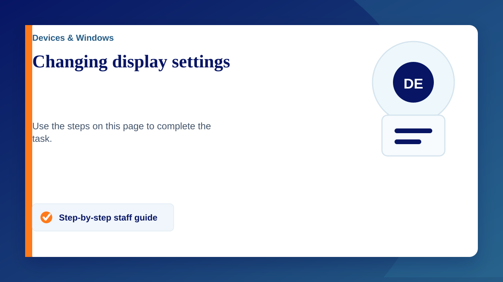

Changing display settings (Chromebook)
Sometimes when connecting your Chromebook to an external display e.g. Projector, TV, Monitor. It will default to extending or 'spanning' your display instead of mirroring it, this can be frustrating when trying to show your class something on the bigger screen. Luckily it's a super quick and easy solution and won't take more than 30 seconds.
Below are instructions on how to change this setting, as well as instructions for a couple other display settings that you might find handy.
Turning off display span
- Click on the bottom right where it shows the time and click the settings cog Alternatively use the search feature and search for settings.
- On the left side click 'Device'
- Click on 'Displays'
- Toggle off 'Allow Windows To Span Displays'
Changing Chromebook display so it mirrors
- Navigate to the 'Displays' settings page as shown previously
- Tick the 'Mirror internal Display' box
Changing Primary Display / Extending Display
- Navigate to the 'Displays' settings page as shown previously
- Untick 'Mirror internal Display' box (if already unticked skip step 2 and move to step 3)
- Select the secondary display
- Select the 'screen' dropdown and choose the option you want (it will be extended by default)
Selecting primary display will make that display the screen where all applications display by default (they will still be an extended display). Repeat the steps but on the original screen if you wish to revert these changes.
Changing display settings (Windows)
- Go to the desktop
- Right click and click on display settings
- Scroll down to 'Multiple displays'
- Select your preferred option from the drop down menu.